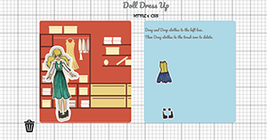
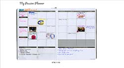
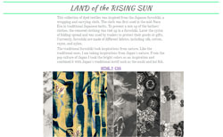

Don't Make Me Think Ch. 2 How we Really Use the Web
In order to know how to really use the web, the author presents three facts that the real world web use.
Fact 1: we don’t read pages. We scan them.
We usually scan or skim web pages, looking for words or phrases that catch our eye. What we see when we look at the page depends on what we have in mind, and it’s usually just a fraction of what’s there. We tend to focus on words and phrases that seem to match (a) task at hand or (b) our current or ongoing personal interest. And (c) the trigger words that are hardwired into our nervous systems.
Fact 2: We don’t make optimal choices. We satisfice.
We don’t choose the best option, we choose the first reasonable option. This depends on things that are in our current frame of mind: how pressed we are for time, and how much confidence we have in the site.
Fact 3: We don’t figure out how things work. We muddle through.
We’re muddling through the site and as a matter of fact, we are using the thing successfully.
On the other hand, if we did use the website correctly, there’s a better chance that we will find what we are looking for, which is good for the user and the designer. There is a better chance that the user will understand the full range of what the site has to offer. The designer can steer the user to the parts of what the designer wants user to see.
One contemporary example of this is pinterest, no one really goes and read every details of every picture that pops up. First thing user does is go to the search bar and type in a keyword. Anything with that keyword pops up and users skim through images that are familiar to that keyword. Although use has typed in a keyword, they narrow the search down more through skimming.
In my opinion, the author is right about his three statement, for in my user experience I do relate to his three facts. The author left off with a message, “ If your audience is going to act like you’re designing billboards, then design great billboards.” It’s true, know who your audience is and design specifically for them. If they expect to a certain thing, do it, just be good at it and sprinkle a few creativity here and there. Your effort will not be noticed, that’s the sad truth.
Meet Me at the Library
February 21, 1:37 pm
My studio 5 is base on a dress up doll. I wanted the ability to drag and drop the clothing on top of the doll. I decided to do this because my final project will have to do with clothing. However, I had a great deal of difficulty with this project, probably because I had to learn everythin gby myself and I couldn't really reference the examples off from others. The libary I decided to use was the html5 drag and drop.With this sepcific code, I put the js codes in the local html. I tried puting it into an exterior js file, but the code no longer worked if I did that. Another problem I was having was when I try to drop the clothing into the box with my doll, the clothing wouldn't overlap the doll. If I did put it on top of the doll, the clothing image would disappear. I figured how to overlap the clothing ontop of the doll through the absolute positioning. But because I did this, all of the clothing are all overlapped.

Time is on my Side
February 14, 1:33 pm
Studio 4 is based off from my passion planner. I used the similar concept from studio 3 where images were overlapped and hidden in order to interact with the items through javascript. However, it is a bit different where this week, there is a time base tool tip use. Inside my tool tip has a video of the significant event that hapened on the specific day I hover my mouse over.
Three aspect that I believe makes this design a good design is that instead of having to click on the image for the details, one simply just hover over the images for content. The second one is that when one hovers over a key items, they turn pink and enlarge. This enables users to know that this key item is interactive. The last aspect is the transitioning of the tool tip. It fades in and fades out smoothly and doesn't delay. This allows a smooth transition for the loop videos that are constantly playing in the hidden tool tip.
Click image for link.

The Archive
February 7, 3:31 am
This week, I chose to make my studio 3 project The Archive on a collection of textiles that I dyed in one of my previous design class. I scanned the photos in a transparent format, black and white,
a larger color and a small color image of six sample cloth. I made it so that each photo is interactive through hovering and clicking. The photos are align next to each other and once the mouse hovers over each image an expanded color
version of the textile pieces appears. Once the mouse click on each photo a light box appears and there is an enlarge piece of the picture showcased along with a few information about how and what they textile was made of. After that,
one can exit the light box with the circular shape "x".
Three aspect that makes my users interface affective is one when the photos are hover over it is simple and straight forward. Second the hovering lets the users knows that this item is interactive. Once the user know that the item is interactive, they will click it. There is also a simple "x" that is universal for exiting out of the light box. Lastly, there is an opacity set at .90 for the light box where users can see through to the orginal page. This allows users to know that they have not left the page but simply opened up a box on the same page. The opacity is set at .90 because this will allow the users to carefully examine the larger picture without disraction.
Click image for link.

Pinterest
January 31, 11:21 am
Today I am evaulating Pinterest interface base off of Bill Derouchey's article/slideshow on interface design. In this
slideshow Derouchey covers the idea of getting inspiration from your everyday objects. With this said, "insipiration fuels design" (Derouchey). He believes that our interactions with objects has language such as color, icons, words
size, shape layout, motion sequence sound, and feel. Why are these important? Because they give priority, calirity, and purpose to our designs (Derouchey).
Pinterest is a website that I use on a regular basis for inspiration. I feel that it is straight forward and easy to navigate. The website has a lot of the common navigation tabs and bars that a user
is use to using on a web interface. At the very top of the page is where the search bar is. It is good that this search bar was set at the top of the page because Pinterest function is to search titles for photos. Moreover, its navigation
icon that serve as a navigation bar has icons that people normally relate to because of the similarity on other sites, for example the profile icon of a human head and bodice. The homepage uses an algorithm to feed the user inspirations
from past similar searches and new ones. Overall, I feel that the simplicity of the web page is successful as to what Derouchey explains because under each images, there is a hierarchy of font size. This font size is important because
it is able to give you the information you are looking for immediately to see if this image matches your search. The hierarchy of the image being larger than the text is important as well because when a user is searching for inspiration,
the user wants to look at images. Not words. There is enough spacing in between images to give a clear layout and priority to each images. Once you intereact with the image, it gives you the opportunity to pin it or look for further
details that have similarities to the image. Overall, I say that pinterest is a very successful site that was put together. Over the years I have not seen many changes to the website because it is successful and straight forward. If
it to be updated more the in the future, it will be a good change. However, too much change can confuse the user.
Click on image for link.

Netflix
January 17, 12:15 pm
For this first blog entry on a user web interface that I admire is the Netflix phone app. I do believe that the app does a great job with laying out everything in an orderly manner. It maintains it's
signature color that everyone recognizes it by, red and black. It is simple and informative. Its function is a bit standardize like the search button being on the right corner and the use of the hamburger navigation bar. I feel that
netfliz have to do becaue it wants many people to use this app. Using Standardize features makes it easier for a lot of users to connect and understands its functions. Last but not least, the way it categorize its movies list is straight
forward and uses an algorithm to pick movies that you as a user would like to watch. This is a concept that I have not understood yet and would like to be ablle to do this too.
Click on image for link.